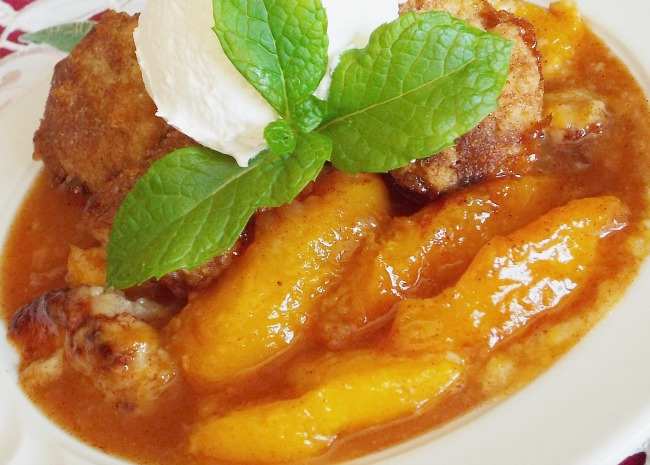

Fresh Southern Peach Cobbler

Description
What better way to finish off your Thanksgiving dinner than with a tasty
dessert. In the spirit of fall, we would like to share this yummy Peach
Cobbler recipe. It has all the elements you are looking for this season.
Enjoy!
Ingredients
- 8 fresh peaches - peeled, pitted and sliced into thin wedges
- ¼ cup white sugar
- ¼ cup brown sugar
- ¼ teaspoon ground cinnamon
- ⅛ teaspoon ground nutmeg
- 1 teaspoon fresh lemon juice
- 2 teaspoons cornstarch
- 1 cup all-purpose flour
- ¼ cup white sugar
- ¼ cup brown sugar
- 1 teaspoon baking powder
- ½ teaspoon salt
- 6 tablespoons unsalted butter, chilled and cut into small pieces
- ¼ cup boiling water
Mix Together
- 3 tablespoons white sugar
- 1 teaspoon ground cinnamon
Steps
- Preheat oven to 425 degrees F (220 degrees C).
- In a large bowl, combine peaches, 1/4 cup white sugar, 1/4 cup brown sugar, 1/4 teaspoon cinnamon, nutmeg, lemon juice, and cornstarch. Toss to coat evenly, and pour into a 2 quart baking dish. Bake in preheated oven for 10 minutes.
- Meanwhile, in a large bowl, combine flour, 1/4 cup white sugar, 1/4 cup brown sugar, baking powder, and salt. Blend in butter with your fingertips, or a pastry blender, until mixture resembles coarse meal. Stir in water until just combined.
- Remove peaches from oven, and drop spoonfuls of topping over them. Sprinkle entire cobbler with the sugar and cinnamon mixture. Bake until topping is golden, about 30 minutes.
Nutrition Facts
Per Serving: 562 calories; protein 3.5g;
carbohydrates 99.4g; fat 17.6g; cholesterol 45.8mg; sodium 399.7mg.